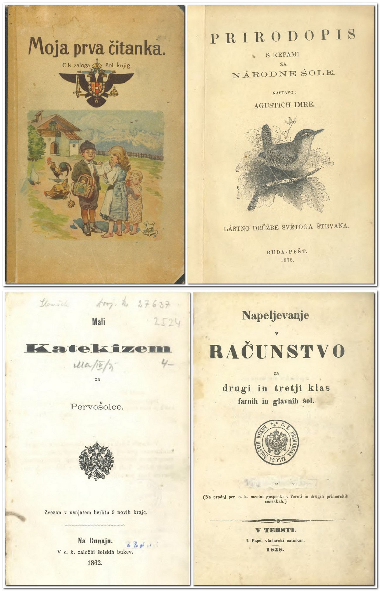

Meni
Naslovnica
Kolofon
Kazalo
Vsebina
1 Uvod
2 Struktura
3 Navodila za uporabo seznama
4 Viri in literatura (spremna študija)
Seznam učbenikov
Tabelarni prikaz
English
Domov
Naslovnica
Kolofon
Kazalo
Vsebina
1 Uvod
2 Struktura
3 Navodila za uporabo seznama
4 Viri in literatura (spremna študija)
Seznam učbenikov
Tabelarni prikaz
English
Jan Bernot
Neja Blaj Hribar
Učbeniki za osnovne in nižje srednje šole med letoma 1774 in 1918:
komentirana bibliografija s spremno študijo

Inštitut za novejšo zgodovino
Ljubljana
2023